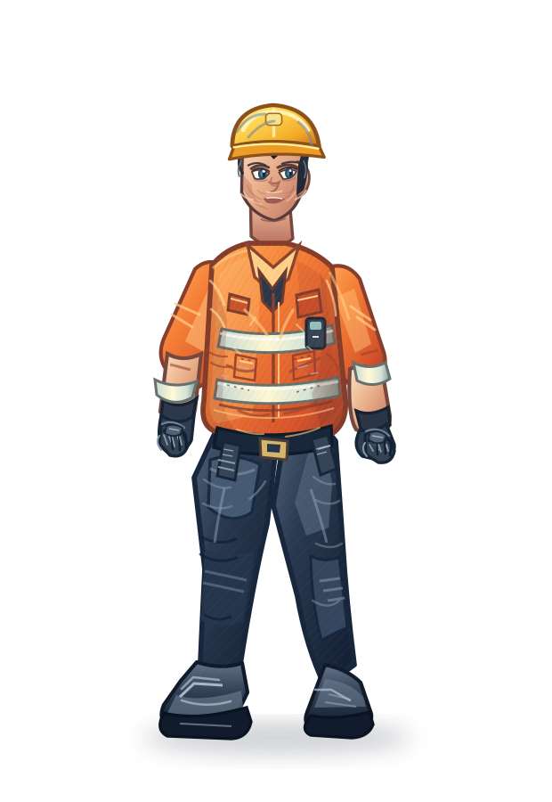
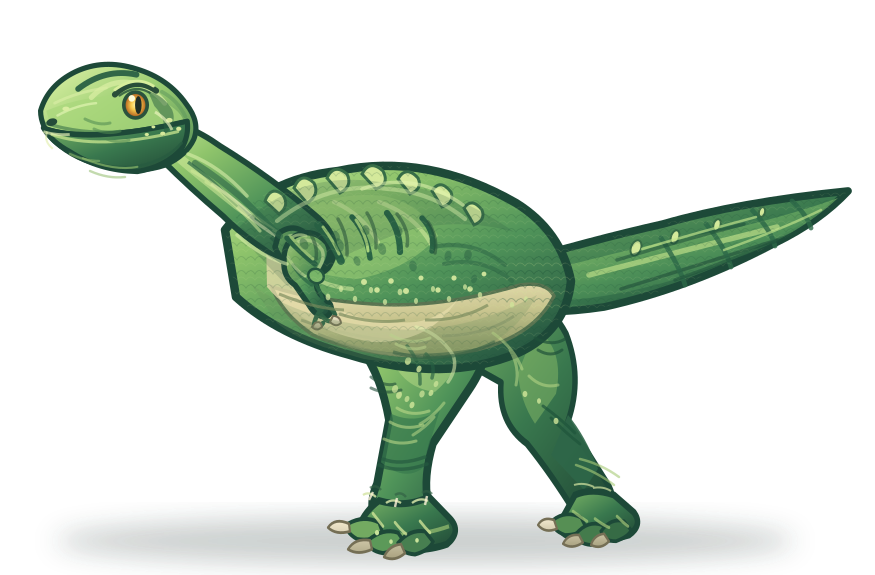

01 / HUMAN CHARACTER
Trabajador
Ropa industrial por capas · silueta atlética · rostro anime expresivo

Casco reforzadoChaqueta reflectanteEquipo utilitarioAnatomía completa
Tercera iteración estática: proporciones ajustadas, anatomía conectada y acabado cel-shading con detalle dibujado. El objetivo de esta fase es definir una silueta clara, anatomía convincente y materiales legibles antes de reactivar el trabajo de animación.
Ropa industrial por capas · silueta atlética · rostro anime expresivo

Terópodo bípedo · anatomía ligera y potente · marcas y rasgos propios
